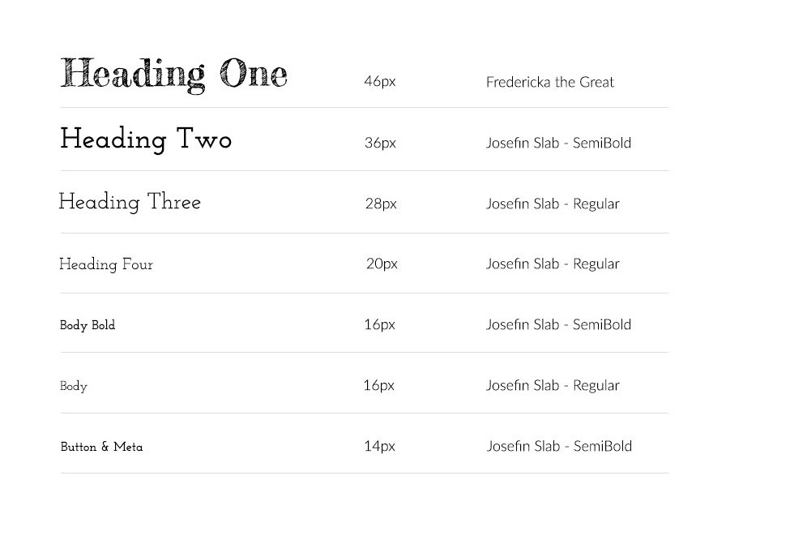

Olga Sago Photography
Project Type
Website Design & Development
Overview
The objective was to design and develop my personal photography portfolio website to showcase my experience in various types of photography. The website was designed to be simple and easy to navigate with hints of simplicity and creativity. It was coded from scratch by me with HTML, CSS and JavaScript, and made responsive for mobile devices.
Site Structure
In the last three plus years, I have gained a lot of experience in various types of photography, which meant I needed to determine the best way to showcase my work online. For this, I developed an outline of the website’s structure so that visitors can easily navigate and find what they’re looking for.
Style Guide
The style I chose for the website is similar to my personal portfolio website but with more pop of creativity.
Type Scale
Color Palette

Development
I decided early on that I was going to code the website myself, instead of using a content management system, so that I can improve my front-end development skills. Therefore, everything was coded in HTML, CSS or JavaScript and uploaded to a GitHub repository.
During the development process, I also performed extensive testing on various browsers and devices to ensure the website would be cross-platform compatible and mobile friendly.
Finished Look
You may see snippets of the finished look here, or simply click here to view the live site.